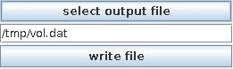

Write volume
The module writes data to volumetric binary file. It writes only byte data of the first scalar component.
Input data
The input field is 3D regular.
Parameters

Press select output file button and select a file name for the output file in the file browser or type the file name into the text input field below the button.
In order to write data to the file press the write file button.